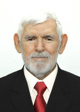
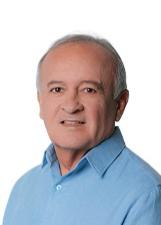

Paraíba
Quem ocupa os cargos hoje e quem assume em 2027.
Resultado provisórioTSE, capturado em 29/10/2026
Poder Executivo
Administra o governo e executa as leis: saúde, educação, segurança, estradas e o orçamento.
Governador
JoãoPSB · 1.221.904 votos✓ Reeleito›Quem comanda cada cidade do estado.
Poder Legislativo
Cria as leis, aprova o orçamento e fiscaliza o Executivo.
Senadores (3)
Daniella RibeiroPP · 831.701 votos · eleito em 2018★ Novato no Senado›Efraim FilhoUNIÃO · 617.477 votos · eleito em 2022★ Novato no Senado›VenezianoPSB · 844.786 votos★ Novato no Senado›Deputados federais (12)
Bancada federal por partido
12 cadeiras de Paraíba
- REPUBLICANOS325%
- PL217%
- PP217%
- PODE18%
- PSB18%
- PSC18%
- PT18%
- UNIÃO18%
Do partido com mais cadeiras para o com menos, não por posição política. Cada partido usa a sua cor de marca; cinza é partido sem cor registrada na fonte.
Deputados federais (12): buscar e ver a lista

Luiz CoutoPT · 54.851 votos · eleito em 2022↺ Retorno›Mersinho LucenaPP · 114.818 votos · eleito em 2022★ Novato na Câmara›Murilo GaldinoREPUBLICANOS · 112.891 votos★ Novato na Câmara›Ruy CarneiroPSC · 102.531 votos✓ Reeleito›Wellington RobertoPL · 109.067 votos✓ Reeleito›Wilson SantiagoREPUBLICANOS · 84.407 votos✓ Reeleito›Deputados estaduais e distritais (36)
Assembleia por partido
36 cadeiras de Paraíba
- REPUBLICANOS822%
- PSB617%
- PP411%
- PL38%
- PSDB38%
- UNIÃO38%
- MDB26%
- PT26%
- SOLIDARIEDADE26%
- PCDOB13%
- PSD13%
- REDE13%
Do partido com mais cadeiras para o com menos, não por posição política. Cada partido usa a sua cor de marca.
Deputados estaduais e distritais (36): buscar e ver a lista

Branco MendesREPUBLICANOS · 31.202 votos✓ Reeleito›Caio RobertoPL · 36.809 votos · eleito em 2022✓ Reeleito›Camila ToscanoPSDB · 32.586 votos✓ Reeleito›Chico MendesPSB · 43.068 votos · eleito em 2022★ Novato›ChióREDE · 28.569 votos✓ Reeleito›Cida RamosPT · 31.819 votos✓ Reeleito›DR RomualdoMDB · 24.075 votos · eleito em 2022★ Novato›DR. Eduardo BritoSOLIDARIEDADE · 22.778 votos · eleito em 2022★ Novato›DR. Jane PantaPP · 41.277 votos · eleito em 2022★ Novato›DR. PaulaPP · 38.799 votos · eleito em 2022✓ Reeleito›Danielle do ValeREPUBLICANOS · 37.235 votos★ Novato›Eduardo CarneiroSOLIDARIEDADE · 47.535 votos✓ Reeleito›Fabio RamalhoPSDB · 48.260 votos★ Novato›Felipe LeitãoPSD · 48.277 votos✓ Reeleito›Francisca MottaREPUBLICANOS · 40.230 votos · eleito em 2022↺ Retorno›Galego de SouzaPP · 34.452 votos · eleito em 2022✓ Reeleito›George MoraisUNIÃO · 26.733 votos★ Novato›GilbertinhoUNIÃO · 21.893 votos★ Novato›Hervazio BezerraPSB · 31.798 votos✓ Reeleito›Inácio FalcãoPCDOB · 24.266 votos · eleito em 2022✓ Reeleito›Joao GonçalvesPSB · 37.431 votos✓ Reeleito›João PauloPP · 46.088 votos★ Novato›Junior AraujoPSB · 41.800 votos✓ Reeleito›Jutay MenesesREPUBLICANOS · 33.272 votos · eleito em 2022★ Novato›Luciano CartaxoPT · 22.272 votos · eleito em 2022↺ Retorno›Marcio RobertoREPUBLICANOS · 40.909 votos · eleito em 2022↺ Retorno›Michel HenriqueREPUBLICANOS · 46.699 votos★ Novato›Sargento NetoPL · 20.602 votos★ Novato›Taciano DinizUNIÃO · 33.779 votos · eleito em 2022✓ Reeleito›Tanilson SoaresPSB · 42.087 votos★ Novato›Tiao GomesPSB · 41.806 votos · eleito em 2022✓ Reeleito›TovarPSDB · 23.577 votos · eleito em 2022✓ Reeleito›Wallber VirgolinoPL · 49.419 votos✓ Reeleito›Wilson FilhoREPUBLICANOS · 47.129 votos✓ Reeleito›Os eleitos de cada cidade do estado.
Poder Judiciário
Julga os conflitos e garante que as leis sigam a Constituição.
Os desembargadores do Tribunal de Justiça e do Tribunal Regional Eleitoral. Não são eleitos.
Poder Executivo
Administra o governo e executa as leis: saúde, educação, segurança, estradas e o orçamento.
Governador
Lucas RibeiroPP · 1.470.252 votos★ Novato›Quem comanda cada cidade do estado.
Poder Legislativo
Cria as leis, aprova o orçamento e fiscaliza o Executivo.
Senadores (3)
Efraim FilhoUNIÃO · 617.477 votos · eleito em 2022★ Novato no Senado›Joao AzevêdoPSB · 1.391.994 votos★ Novato no Senado›VenezianoMDB · 974.550 votos✓ Reeleito›Deputados federais (12)
Bancada federal por partido
12 cadeiras de Paraíba
- REPUBLICANOS325%
- PL217%
- PP217%
- PCDOB18%
- PODE18%
- PSD18%
- PT18%
- UNIÃO18%
Do partido com mais cadeiras para o com menos, não por posição política. Cada partido usa a sua cor de marca.
Deputados federais (12): buscar e ver a lista
Deputados estaduais e distritais (36)
Assembleia por partido
36 cadeiras de Paraíba
- PP822%
- REPUBLICANOS822%
- PL617%
- MDB411%
- PSB38%
- PT26%
- PV26%
- UNIÃO26%
- PCDOB13%
Do partido com mais cadeiras para o com menos, não por posição política. Cada partido usa a sua cor de marca.
Deputados estaduais e distritais (36): buscar e ver a lista
Os eleitos de cada cidade do estado.
Poder Judiciário
Julga os conflitos e garante que as leis sigam a Constituição.
Os desembargadores do Tribunal de Justiça e do Tribunal Regional Eleitoral. Não são eleitos.
Como ler
★ Novato Primeiro mandato nesta casa (Câmara ou Senado).
✓ Reeleito Já estava no cargo e foi eleito de novo.
↺ Retorno Já teve mandato, mas estava fora.
Sem selo Não conseguimos ligar a pessoa a um mandato anterior. Isso não quer dizer que seja novata: simplesmente não afirmamos nada.
Provisório Só é confirmado na diplomação.